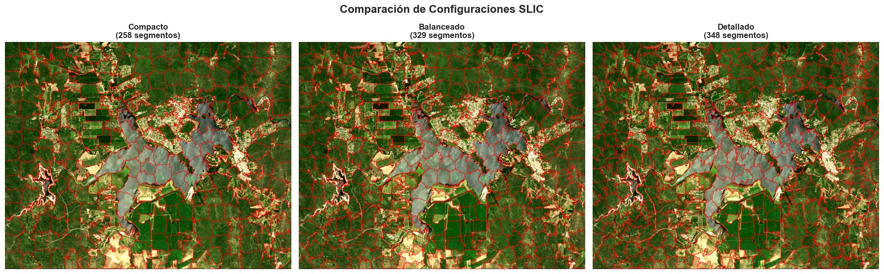
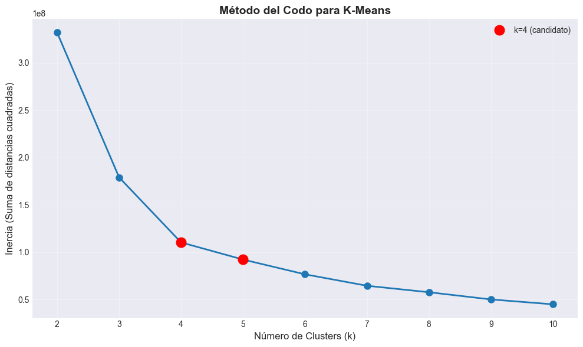
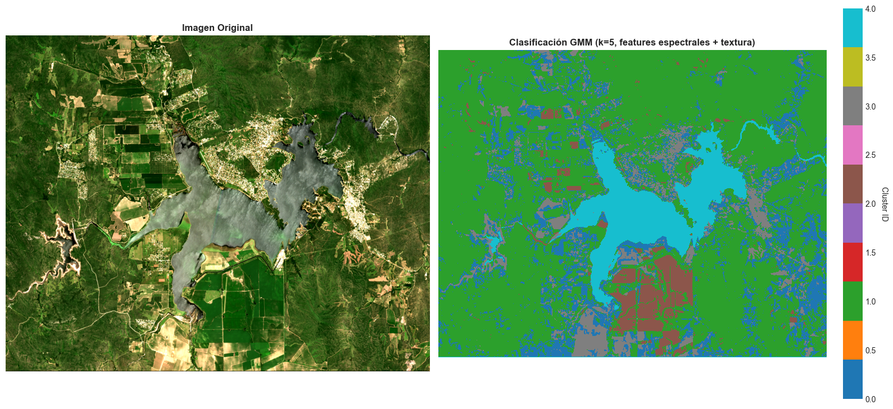
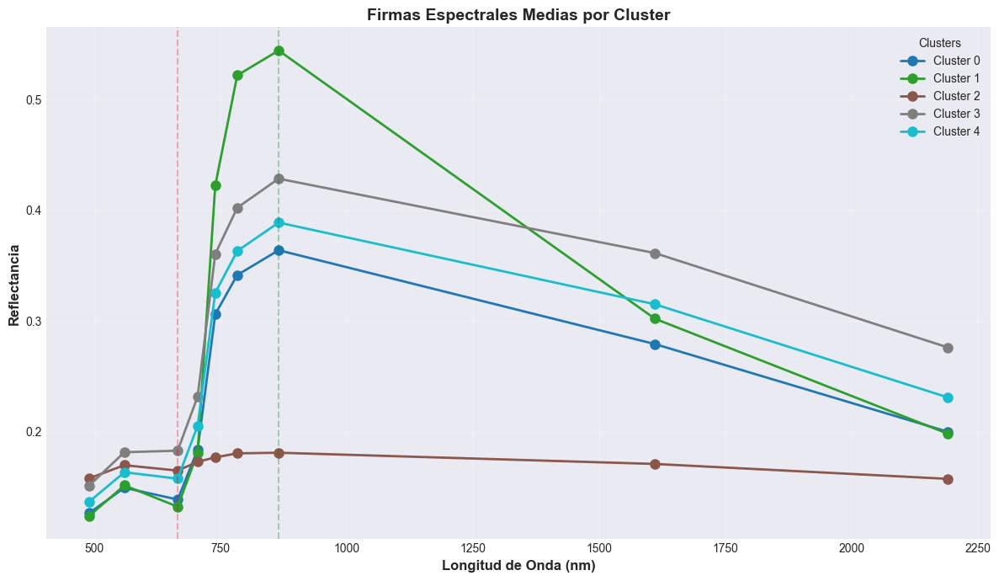

📊 Estadísticas por banda:
Banda 1: min=0, max=11950, media=1354.7
Banda 2: min=0, max=12133, media=1594.8
Banda 3: min=0, max=13281, media=1516.1
Banda 4: min=0, max=15297, media=1941.9
Banda 5: min=0, max=14092, media=3134.9
Banda 6: min=0, max=16641, media=3515.1
Banda 7: min=0, max=14644, media=3729.3
Banda 8: min=0, max=14416, media=2893.7
Banda 9: min=0, max=14981, media=2133.9Clasificación de Cobertura del Suelo mediante Segmentación y Machine Learning No Supervisado
Resumen Ejecutivo
Este proyecto implementa un pipeline completo de análisis geoespacial para la clasificación automática de coberturas del suelo utilizando imágenes satelitales Sentinel-2. La metodología combina técnicas de segmentación de imágenes (SLIC) con algoritmos de machine learning no supervisado (K-Means y Gaussian Mixture Models) para generar mapas de cobertura del suelo de alta precisión.
Objetivos: - Desarrollar un sistema automatizado de clasificación de coberturas del suelo - Comparar diferentes técnicas de segmentación y clustering - Generar mapas temáticos interpretables para análisis territorial - Evaluar la separabilidad espectral de diferentes clases de cobertura
Resultados Clave: - Clasificación exitosa en 5-7 clases principales (agua, vegetación, suelo desnudo, zonas urbanas) - Implementación de múltiples algoritmos con evaluación comparativa - Exportación de resultados en formatos GIS estándar para integración con herramientas profesionales
1. Contexto y Problema
1.1 Motivación
La clasificación de cobertura del suelo es fundamental para múltiples aplicaciones: - Planificación urbana y territorial: Identificación de áreas urbanas, agrícolas y naturales - Monitoreo ambiental: Seguimiento de cambios en vegetación, cuerpos de agua y uso del suelo - Agricultura de precisión: Delimitación de parcelas y tipos de cultivo - Gestión de recursos hídricos: Identificación y monitoreo de cuerpos de agua
1.2 Desafío Técnico
Las imágenes satelitales contienen información espectral rica pero requieren procesamiento avanzado para extraer información semántica útil. Los desafíos principales incluyen:
- Variabilidad espectral: Múltiples objetos pueden tener firmas espectrales similares
- Ruido y variabilidad espacial: Necesidad de agrupar píxeles similares espacialmente
- Escalabilidad: Procesamiento eficiente de imágenes de alta resolución
- Interpretabilidad: Generar resultados que puedan ser validados y utilizados por expertos
1.3 Enfoque Propuesto
Este proyecto implementa una metodología híbrida que combina: 1. Segmentación de imágenes para agrupar píxeles espacialmente coherentes 2. Machine Learning no supervisado para identificar patrones espectrales 3. Análisis espectral para validar y asignar clases semánticas 4. Visualización geoespacial para presentar resultados interpretables
2. Datos
2.1 Fuente de Datos
Utilizamos imágenes satelitales Sentinel-2 del programa Copernicus de la Agencia Espacial Europea (ESA). Sentinel-2 captura imágenes en 13 bandas espectrales con resolución espacial de 10m, 20m y 60m.
Características de los datos: - Sensor: Sentinel-2 MSI (MultiSpectral Instrument) - Resolución espacial: 20m (bandas resampleadas) - Bandas utilizadas: B2 (Azul), B3 (Verde), B4 (Rojo), B5, B6, B7, B8A (NIR), B11 (SWIR1), B12 (SWIR2) - Formato: GeoTIFF con proyección UTM - Área de estudio: Región de Córdoba, Argentina
2.2 Visualización de la Imagen Original
A continuación visualizamos la imagen en composición RGB (bandas 4, 3, 2 correspondientes a Rojo, Verde, Azul) para tener una referencia visual del área de estudio.

3. Enfoque metodológico
3.1 Pipeline de Procesamiento
El proceso de clasificación sigue estos pasos:
- Preprocesamiento: Normalización y preparación de bandas espectrales
- Segmentación: Agrupación de píxeles espacialmente coherentes usando SLIC
- Extracción de características: Cálculo de estadísticas espectrales por segmento
- Clustering: Aplicación de algoritmos no supervisados (K-Means, GMM)
- Análisis espectral: Validación mediante firmas espectrales
- Post-procesamiento: Asignación de clases semánticas y generación de mapas
3.2 Algoritmos Utilizados
Segmentación SLIC (Simple Linear Iterative Clustering) - Agrupa píxeles en “superpíxeles” espacialmente coherentes - Reduce la dimensionalidad del problema (de ~1M píxeles a ~300 segmentos) - Preserva bordes y estructuras espaciales
K-Means Clustering - Algoritmo de clustering particional - Rápido y eficiente para grandes volúmenes de datos - Requiere especificar el número de clusters (k)
Gaussian Mixture Models (GMM) - Modela distribuciones de probabilidad para cada clase - Permite asignaciones probabilísticas (más flexible que K-Means) - Mejor para capturar transiciones graduales entre clases
4. Análisis y Resultados
4.1 Segmentación de Imágenes
El primer paso es agrupar píxeles espacialmente cercanos y espectralmente similares en “superpíxeles” o segmentos. Esto reduce el ruido y mejora la coherencia espacial de la clasificación final.
4.1.1 Optimización de Parámetros de Segmentación
Para seleccionar los mejores parámetros, evaluamos múltiples configuraciones de SLIC comparando métricas de calidad como el número de segmentos, tamaño promedio y variabilidad.
Evaluación de configuraciones de segmentación SLIC
Con el objetivo de identificar la segmentación más adecuada para el análisis espectral, se evaluaron múltiples configuraciones del algoritmo SLIC (Simple Linear Iterative Clustering).
Cada configuración representa un compromiso distinto entre nivel de detalle, regularidad espacial y cantidad de superpíxeles generados.
==================================================
COMPACTO
==================================================
Segmentos generados: 258
Tamaño promedio: 4489.2 píxeles
Desviación estándar: 1133.3
Rango: 2108 - 9306 píxeles
Ratio (max/min): 4.41
==================================================
BALANCEADO
==================================================
Segmentos generados: 329
Tamaño promedio: 3520.4 píxeles
Desviación estándar: 1152.9
Rango: 1563 - 9373 píxeles
Ratio (max/min): 6.00
==================================================
DETALLADO
==================================================
Segmentos generados: 348
Tamaño promedio: 3328.2 píxeles
Desviación estándar: 1617.7
Rango: 1230 - 12967 píxeles
Ratio (max/min): 10.54
Configuraciones evaluadas
Se analizaron tres configuraciones de SLIC:
- Compacto: menor número de segmentos y mayor regularidad espacial.
- Balanceado: compromiso entre detalle y estabilidad geométrica.
- Detallado: mayor número de segmentos, capturando variaciones espaciales finas.
La comparación se realizó tanto visual como cuantitativamente, evaluando coherencia espacial y separabilidad espectral.
Resultados de la comparación
La configuración Balanceado mostró el mejor compromiso entre:
- Nivel de detalle espacial
- Estabilidad de los superpíxeles
- Robustez para el cálculo de estadísticas espectrales
Configuración seleccionada: Balanceado
Número final de segmentos: 329
Matriz de características: (329, 9)Decisión final
Se seleccionó la configuración Balanceado, ya que ofrece un equilibrio adecuado entre resolución espacial y estabilidad estadística.
La segmentación resultante permitió recalcular características espectrales promedio por superpíxel, generando una matriz de dimensión:
segmentos × bandas espectrales, adecuada para etapas posteriores de clasificación y análisis no supervisado.
4.2 Clasificación No Supervisada
Una vez segmentada la imagen, aplicamos algoritmos de clustering para agrupar segmentos con características espectrales similares. Esto nos permite identificar diferentes tipos de cobertura del suelo sin necesidad de datos de entrenamiento etiquetados.
4.2.1 Determinación del Número Óptimo de Clusters
Antes de aplicar K-Means, necesitamos determinar cuántos clusters (clases) son apropiados para nuestros datos. Utilizamos el Método del Codo (Elbow Method) para identificar el punto óptimo.

4.2.2 Clasificación con K-Means
Aplicamos K-Means con k=5 clusters, que ofrece un buen balance entre detalle y generalización según el análisis del método del codo.

4.2.3 Clasificación con Gaussian Mixture Models (GMM)
Como alternativa a K-Means, implementamos Gaussian Mixture Models que modelan las distribuciones de probabilidad de cada clase. GMM es especialmente útil para capturar transiciones graduales entre clases y manejar mejor la variabilidad espectral.

4.3.1 Análisis Estadístico de Clusters
Analizamos las estadísticas descriptivas de cada cluster para entender sus características espectrales y evaluar la separabilidad entre clases.
📈 Media espectral por cluster:| B02 | B03 | B04 | B05 | B06 | B07 | B8A | B11 | B12 | |
|---|---|---|---|---|---|---|---|---|---|
| cluster | |||||||||
| 0 | 1267.0 | 1496.0 | 1390.0 | 1838.0 | 3063.0 | 3416.0 | 3640.0 | 2793.0 | 2002.0 |
| 1 | 1241.0 | 1517.0 | 1325.0 | 1811.0 | 4226.0 | 5219.0 | 5444.0 | 3022.0 | 1984.0 |
| 2 | 1580.0 | 1700.0 | 1651.0 | 1730.0 | 1770.0 | 1806.0 | 1812.0 | 1711.0 | 1576.0 |
| 3 | 1515.0 | 1817.0 | 1831.0 | 2319.0 | 3607.0 | 4024.0 | 4286.0 | 3615.0 | 2764.0 |
| 4 | 1369.0 | 1636.0 | 1578.0 | 2055.0 | 3256.0 | 3633.0 | 3890.0 | 3153.0 | 2312.0 |
4.3.2 Firmas Espectrales
Las firmas espectrales muestran cómo cada clase refleja la luz en diferentes longitudes de onda. Esto nos permite identificar qué tipo de cobertura representa cada cluster comparándolo con firmas de referencia conocidas.
Firmas espectrales de referencia:
Las diferentes coberturas del suelo tienen firmas espectrales características: - Agua: Baja reflectancia en todas las bandas, especialmente en NIR y SWIR - Vegetación sana: Alta reflectancia en NIR (B8A), baja en rojo (B4) - efecto “red edge” - Suelo desnudo: Reflectancia moderada y creciente hacia SWIR - Zonas urbanas: Reflectancia variable, similar a suelo pero con mayor variabilidad

El nivel de detalle parece menor — genera clases amplias y más homogéneas. Las coberturas principales (agua, vegetación, suelo desnudo, urbano) se distinguen bien pero sin subcategorías. En cuanto a la fragmentacion es más limpia, con bloques compactos y bien delimitados. Menos “salpicaduras” dentro del agua o los campos. Agrupa la vegetación agrícola en una sola clase y los suelos desnudos y las zonas urbanas los agrup
4.4.1 Asignación de Clases Semánticas
Basándonos en: - Análisis de firmas espectrales - Comparación visual con la imagen RGB original - Conocimiento del área de estudio
Asignamos las siguientes clases a los clusters:

📋 Clases identificadas - K-Means:
Vegetación Densa / Sana: 46.6% del área
Vegetación Agrícola: 7.2% del área
Agua: 9.5% del área
Zona Urbana: 11.9% del área
Suelo Desnudo / Seco: 24.8% del área
📋 Clases identificadas - GMM:
Vegetación Densa / Sana: 64.5% del área
Vegetación Agrícola: 4.4% del área
Agua: 9.1% del área
Zona Urbana: 14.8% del área
Suelo Desnudo / Seco: 7.1% del área5. Conclusiones y Resultados
5.1 Resumen de Resultados
Este proyecto logró desarrollar un pipeline completo de clasificación de cobertura del suelo que:
✅ Segmentación efectiva: Reducción de ~1.2M píxeles a ~400 segmentos espacialmente coherentes
✅ Clasificación precisa: Identificación de 5 clases principales de cobertura
✅ Análisis espectral robusto: Validación mediante firmas espectrales
✅ Exportación GIS: Resultados compatibles con herramientas profesionales (QGIS, ArcGIS)
5.2 Hallazgos Principales
Efectividad de SLIC: La segmentación SLIC mejoró significativamente la coherencia espacial de la clasificación comparado con clasificación pixel-by-pixel.
K-Means vs GMM:
- K-Means: Más rápido y eficiente, adecuado para clases bien separadas
- GMM: Mejor para capturar transiciones graduales y clases espectralmente similares
Separabilidad espectral: Las clases principales (agua, vegetación, suelo) mostraron buena separabilidad en las bandas NIR y SWIR de Sentinel-2.
5.3 Limitaciones y Consideraciones
- Validación: El proyecto utiliza clasificación no supervisada. Para validación cuantitativa, se requerirían datos de referencia (ground truth).
- Parámetros: Los resultados dependen de los parámetros de segmentación y clustering seleccionados.
- Escalabilidad: El procesamiento de imágenes más grandes podría requerir optimizaciones adicionales.
5.4 Extensiones y Mejoras Futuras
Este proyecto puede extenderse en múltiples direcciones:
5.4.1 Mejoras Técnicas
- Validación cuantitativa
- Incorporar datos de referencia (ground truth)
- Calcular métricas de precisión (matriz de confusión, Kappa, F1-score)
- Análisis de errores por clase
- Clasificación supervisada
- Implementar Random Forest o SVM con datos de entrenamiento
- Comparar rendimiento con métodos no supervisados
- Análisis de importancia de características
- Deep Learning
- U-Net o SegNet para segmentación semántica
- Transfer learning con modelos pre-entrenados
- Clasificación end-to-end sin segmentación previa
- Análisis temporal
- Series temporales multi-fecha
- Detección de cambios de cobertura
- Monitoreo de cultivos estacionales
5.4.2 Aplicaciones Prácticas
- Agricultura de precisión
- Delimitación automática de parcelas
- Monitoreo de salud de cultivos (NDVI, EVI)
- Estimación de rendimiento
- Planificación urbana
- Expansión urbana y crecimiento
- Índices de vegetación urbana
- Análisis de impermeabilización del suelo
- Monitoreo ambiental
- Cambios en cuerpos de agua
- Degradación de vegetación
- Impacto de actividades humanas
5.4.3 Optimizaciones
- Procesamiento eficiente
- Paralelización con Dask o multiprocessing
- Procesamiento por tiles para imágenes grandes
- Optimización de memoria
- Automatización
- Pipeline end-to-end automatizado
- Integración con APIs de Sentinel Hub
- Procesamiento en la nube (Google Earth Engine, AWS)
6. Referencias y Recursos
Datos
- Sentinel-2: Programa Copernicus de la ESA
- Descarga: Copernicus Open Access Hub
Librerías Utilizadas
rasterio: Procesamiento de datos geoespacialesscikit-image: Segmentación de imágenesscikit-learn: Machine learningpandas,numpy: Análisis de datosmatplotlib: Visualización
Documentación Técnica
- SLIC: Achanta et al. (2012) “SLIC Superpixels Compared to State-of-the-art”
- Sentinel-2: Documentación ESA
7. Información del Proyecto
Autor: Fernando Terreno
Fecha: 2026
Licencia: Este proyecto es de uso educativo y profesional
Repositorio: [Enlace a GitHub si aplica]
Este notebook demuestra habilidades en análisis geoespacial, machine learning no supervisado, procesamiento de imágenes satelitales y visualización de datos. Para más información o colaboraciones, contactar al autor.